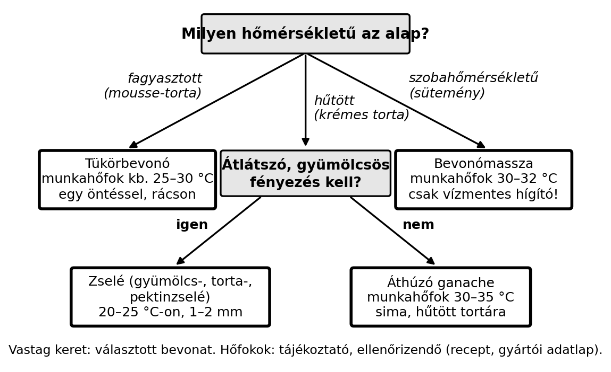

Képzeld el, hogy háromféle tortarendelés fut egyszerre a műhelyben: egy klasszikus tejszínes gyümölcstorta, egy fagyasztott mousse-torta és egy elegáns étcsokoládékéreggel bevont szelet. A hagyományos tejszínes tortához lágy, hűtött tortazselé kell; a mousse-tortához tükörbevonó, amely csak fagyasztott felületre folyik hibátlanul; a szelethez pedig temperált csokoládéból, bevonómasszából vagy áthúzó ganache-ból készült vékony, fényes bevonat. Ha nem tudod, melyik bevonat milyen hőmérsékleten, milyen alapra és mennyi hígítással használható, kifolyik, puha marad, megtörik vagy elveszíti a fényét. Ez az alfejezet a négy legfontosabb hideg bevonatot tanítja meg úgy, ahogy a cukrászüzemben választanod kell: mit, miből, milyen hőfokon, milyen alapra.
Döntési fa a bevonatválasztásról: az első kérdés az alap hőmérséklete (fagyasztott → tükörbevonó; szobahőmérsékletű → bevonómassza), hűtött alapnál a második kérdés, hogy átlátszó, gyümölcsös fényezés kell-e (igen → zselé, nem → áthúzó ganache).

Képzeld el a hőmérsékleti szabályt: a hűtött torta alig melegíthető fel, ezért hűtött bevonat kell rá; a fagyasztott tortára pedig csak úgy kerülhet vékony, fényes réteg, ha a bevonó gyorsan dermed, mielőtt a felület megolvad. Ezt a munkát a következő négy csoportban oldjuk meg.
Definíció. A bevonómassza a csokoládéhoz hasonló, de részben más növényi zsiradékkal is készülő, kakaótartalmú édesipari bevonóanyag. A Magyar Élelmiszerkönyv és az uniós kakaó- és csokoládé-irányelv szerint a csokoládé néven forgalmazott terméknek kakaóvajat kell tartalmaznia; a bevonómassza kakaóvaj mellett vagy helyett más növényi zsiradékot is tartalmazhat, ezért általában nem nevezhető csokoládénak (ellenőrizendő: pontos megnevezés és összetételi követelmény). Bevonómassza ét-, tej-, fehér és színezett változatban is kapható.
Definíció. A zselé a cukor, víz vagy gyümölcsalap, sav és zselésítő anyag (zselatin, pektin, agar vagy más hidrokolloid) rendszeréből kialakuló, lágy vagy feszes gél. A cukrászati zselé lehet önálló fogyasztási termék, tortabevonat, süteményfényező, vagy gyümölcstöltelékben térhálósított réteg.
Definíció. Az áthúzó ganache csokoládé és tejszín rendszeréből készült emulzió, amelyet legalább részben hűtött, sima torta bevonására használunk. A csokoládé–tejszín arány határozza meg, hogy tömör (töltő), krémessé verhető vagy áthúzásra, öntésre alkalmas, fényes bevonat lesz belőle.
Definíció. A tükörbevonó (glaçage miroir) sűrű, csillogó, zselatinnal vagy pektinnel stabilizált bevonat, amelyet jellemzően fagyasztott mousse-tortára öntenek, és vékony, félkemény rétegben dermed.
Szabály. Minden bevonatot a hordozó hőmérséklete és nedvességtartalma szerint válasszunk ki; a hőmérséklet- és arányproblémák okát előbb a nyersanyag fázisállapotában keressük, nem a díszítési trükkben.
A bevonómassza táblában, korongban (pasztilla) vagy tömbben érkezik. Olvasztásakor ugyanaz a hőfokprobléma, mint a csokoládénál: a kakaóvaj és más növényi zsiradékok zsírkristályai hőre megolvadnak, de túlhevítve a kakaó-szárazanyag csomósodik, és a massza elveszítheti fényét.
Szabály. A bevonómasszát – a csokoládéval ellentétben – általában nem kell temperálni: a gyártó által megadott hőfokra olvasztjuk, és ezen a hőfokon dolgozzuk fel (ellenőrizendő: gyártói adatlap; laurinsavas bevonóknál jellemzően kb. 40–45 °C). Laurinsavas bevonómasszát csokoládéval vagy kakaóvajjal ne keverjünk, mert lágy, kivirágzó bevonat lesz belőle.
Technológiai lépéssor bevonómassza olvasztására:
Hiba. Ha a bevonómassza nem folyik, a leggyakoribb ok a túl alacsony hőmérséklet vagy a túl kevés hígító. Ha felmelegítve is csomós, vizes gőz vagy vízcsepp kerülhetett bele: ilyenkor már ne hígítsuk tovább, mert a tétel szemcsés marad; használjuk fel másodlagos felületre, vagy selejtezzük.
A zselésítőket az Zselésítő és sűrítő anyagok, mesterséges édesítőszerek alfejezetben tárgyaltuk. Itt a bevonat-oldali felhasználást tekintjük át.
A tortazselé híg, gyakran vízalapú, áttetsző vagy élénk színű bevonat, amelyet friss gyümölcsök, vékony krémek és gyümölcsös torták védelmére, fényesítésére használnak. Két fontos szerepe van: megakadályozza a gyümölcs kiszáradását, és esztétikailag fényes réteget ad.
Alaprecept 1 kg tortazseléhez (tanulási
példa):
víz 680 g, cukor 300 g, zselatinpor 20 g (kb. 2%, 200 Bloom;
ellenőrizendő: gyártói adatlap szerinti pontos adag) vagy pektin 20 g.
Egy ízesített változatnál a víz egy részét gyümölcslé vagy kevés pálinka
adja (gyermekeknek szánt termékbe nem való; az alkoholtartalom
tájékoztatási kérdés, ellenőrizendő).
Készítési sorrend:
A pektinzselé akkor előnyös, ha vegetáriánus vendéget kell kiszolgálni, vagy ha hőreverzibilis, újraolvasztható fényező kell. Az NH-pektin hőreverzibilis: a kész zselé újramelegítve ismét folyós lesz, így a maradék újra felhasználható (ellenőrizendő: gyártói adatlap); fényes, ezért tortazseléhez és tükörbevonó alternatívához is használható. Az LM-pektin kalciumot igényel, ezért a gyümölcsök kalciumtartalmát figyelembe kell venni.
Számítás. Egy 0,8 kg-os gyümölcszseléhez 2% NH-pektint kell adni. A szükséges pektinmennyiség:
Ha a pektin 1:5 arányban előzetesen cukorral keverjük a csomósodás elkerülésére, akkor a hordozócukor mennyisége .
Technológiai megjegyzés. A pektines zselé forralható, de a savat csak a főzés vége felé adjuk, különben a pektin térháló idő előtt kialakul vagy leépül.
Az áthúzó ganache esetében a tejszín és a csokoládé emulziója adja a bevonat testét. A csokoládé kakaóvajja a zsírfázis, a tejszín víz és tejfehérje komponense a vizes fázis. Az emulgeálás akkor sikerül, ha a tejszínt először felmelegítjük, majd a csokoládét apránként, egy irányban keverve beépítjük.
Jellemző csokoládé–tejszín arány (tanulási példa, a csokoládé kakaótartalmától és a tejszín zsírtartalmától függően):
| Ganache-típus | Csokoládé:tejszín (tömegarány) | Példa |
|---|---|---|
| Tömör, töltő (trüffel) ganache, étcsokoládé | kb. 2:1 | 400 g étcsokoládé, 200 g tejszín |
| Krémessé verhető ganache, étcsokoládé | kb. 1:1 (hűtve felverve) | 300 g étcsokoládé, 300 g tejszín |
| Áthúzó, öntő ganache, étcsokoládé | kb. 1:1–1,2:1 | 300 g étcsokoládé, 250 g tejszín |
| Áthúzó ganache, tejcsokoládé | kb. 1,5:1 | 300 g tejcsokoládé, 200 g tejszín |
| Áthúzó ganache, fehér csokoládé | kb. 2:1 | 400 g fehér csokoládé, 200 g tejszín |
A tömör ganache 30–32 °C-on is sűrű, nehezen terül, ezért áthúzásra az áthúzó arányt használjuk. Az arányok tájékoztató tanulási értékek (ellenőrizendő: szakkönyv, gyártói ajánlás); a fehér csokoládé több cukrot és tejport tartalmaz, ezért a tejszín–csokoládé arány eltér.
Készítési sorrend:
Hiba. Ha a ganache kicsapódik, vagy olajos lesz, az emulzió megtört. Ennek oka lehet túl hideg csokoládé, túl forró tejszín, vagy túl gyors keverés. A javítás: nagyon kevés, 35–40 °C-os tejszín adagolásával próbáljuk újraemulgeálni; ha nem sikerül, a tételt krémalapnak lehet felhasználni, de bevonásra nem.
A tükörbevonó a fagyasztott desszertek klasszikus bevonata, mert a hideg felületen gyorsan dermed, és egyenletes, fényes réteget ad. A fő összetevők: cukor, glükóz, víz, sűrített tej, zselatin és csokoládé (vagy kakaópor, illetve fehércsokoládé-alap).
Alaprecept kb. 730 g tükörbevonóhoz (tanulási példa, fehércsokoládés változat; a mennyiségek ellenőrizendők: gyártói adatlap, szakkönyv):
| Nyersanyag | Mennyiség (g) | Megjegyzés |
|---|---|---|
| Cukor | 160 | |
| Víz (a cukorhoz) | 80 | |
| Glükóz | 160 | |
| Sűrített tej | 100 | |
| Fehércsokoládé | 160 | apróra törve |
| Zselatinpor (200 Bloom) | 12 | kb. 1,6% |
| Víz a zselatin duzzasztásához | 60 | a zselatin tömegének kb. 5-szöröse |
| Ételfesték | néhány csepp | zsírban oldódó vagy a rendszerhez illeszkedő |
| Összesen | 732 | a főzés közbeni párolgás miatt valamivel kevesebb |
Készítési sorrend:
Szabály. A tükörbevonó alkalmazási hőfoka kritikus hőmérséklet. Ha túl meleg, megolvasztja a mousse felső rétegét; ha túl hideg, nem folyik, és vastag, egyenetlen lesz. A mérés elengedhetetlen: digitális hőmérőt használj.
Jogszabály. A csokoládé és bevonómassza összetételét az EU kakaó- és csokoládétermékekre vonatkozó irányelve (2000/36/EK) és a Magyar Élelmiszerkönyv átültetése szabályozza; a bevonómassza megnevezése és zsírtartalma nem mindig azonosítható „csokoládéként” (ellenőrizendő: aktuális előírások). A fogyasztói tájékoztatás szempontjából a zselatint, a zselésítők esetleges allergén voltát, a tej- és szójatartalmat, valamint az alkohol jelenlétét a 1169/2011/EU rendeletnek megfelelően jelölni kell.
Higiénia. Minden bevonat közvetlenül a késztermékre kerül, ezért a munkafelület, a keverőtál, a habverő és a hőmérő legyen tiszta és fertőtlenített. A visszamaradt bevonatot ne öntsd vissza a közös edénybe; a felfogott felesleget csak frissen, azonnal használd fel, hacsak a recept nem enged külön hűtött, jelzett újraolvasztást. A zselatin és a tejfehérje jó táptalaj, ezért a tükörbevonót 2 óránál tovább ne tartsuk melegen; a felesleget zárható edényben, dátumozva hűtőbe tesszük (ellenőrizendő: üzemi útmutató).
Technológiai lap.
Termék: Étcsokoládés áthúzó ganache (1:1) 1 db 20 cm-es torta bevonásához (tanulási recept, nem eredeti hagyományőrző termék).
Alapmennyiség: 300 g kész ganache, 1 db 20 cm-es, hűtött, kiegyenlített torta.
| Nyersanyag | Mennyiség (g) | Megjegyzés |
|---|---|---|
| Étcsokoládé (legalább 53% kakaó) | 150 | Apróra törve, vízmentes edényben |
| Tejszín (35% zsírtartalmú) | 150 | 80–85 °C-ra melegítve |
| Összesen | 300 | — |
Eszközök: főzőlap, lábas, tűzálló keverőtál, digitális hőmérő, szilikon spatula, habverő, szita, tortarács.
Műveleti sorrend:
Kritikus pontok: a tejszín hőmérséklete (80–85 °C), a hűtőtálca hőmérséklete (jellemzően 2–6 °C, ellenőrizendő), a munkahőmérséklet 30–32 °C; a ganache-t nem szabad kevergetés nélkül melegen hagyni, mert a felület bőrösödik.
Allergének: tej (tejszín), szója (egyes csokoládék emulgeátora: szójalecitin), diófélék (ha a csokoládé diós üzemben készült: „nyomokban tartalmazhat”). Glutén, tojás, földimogyoró, szezám, kén-dioxid nincs a receptben.
Minőségi jellemzők: fényes, egyenletes, vékony bevonat; nem csorgott le teljesen; a metszetnél tömör, nem porlékony; ízben nem keserű, nem égett; a ganache 1–2 mm vastag.
Tárolás: hűtött, zárt rendszerben 3 nap (ellenőrizendő), fagyasztva legfeljebb 1 hónap (ellenőrizendő: üzemi HACCP-terv szerint).
A bevonatok minőségét érzékszervi úton és tömeggel ellenőrizzük. A tükörbevonónál a felületnek tükörfényűnek, egyenletes színűnek, hólyag- és csíkozásmentesnek kell lennie; a szeleteléskor a bevonat nem repedhet. Az áthúzó ganache-nál az emulzió jele a fényes, olajmentes felület, a vékony réteg és a sima metszet. A zseléknél a gélnek rugalmasnak, nem vizesnek és nem túl keménynek kell lennie; a gyümölcszselé ne eresszen.
Tömegellenőrzés. Egy 20 cm átmérőjű, kb. 6 cm magas torta felülete (tető és palást) . Az 1–2 mm-es réteg térfogata kb. , ami sűrűséggel kb. ganache-t jelent. A 300 g ganache-ból tehát jelentős a lecsöpögő felesleg (kb. 130–215 g), amelyet tisztán gyűjtünk és a higiéniai szabály szerint kezelünk. Ha a tortán maradt bevonat ennél lényegesen vastagabb, a ganache mennyiségét csökkenteni kell.
A tükörbevonó nem folyik egyenletesen.
Tünet: vastag, csíkos, lépcsőzetes felület.
Ok: túl hideg a munkahőmérséklet, vagy a zselatin nem oldódott
fel teljesen.
Megelőzés: a hőmérőt mindig használjuk, a zselatint szűrjük, a
masszát botmixerrel simítjuk.
Az áthúzó ganache kicsapódik.
Tünet: szemcsés, olajos, fénytelen.
Ok: hőmérséklet-sokk (hideg csokoládé + forró tejszín), túl
gyors keverés, vagy a csokoládé nem volt elég finomra törve.
Megelőzés: a tejszínt ne forraljuk, a csokoládét apróra törjük,
lassan keverjünk.
A bevonómassza nem hígul.
Tünet: a massza túl sűrű, nem folyik a formákra.
Ok: túl hideg a massza, vagy rossz hígítót használunk (víz,
hideg tejszín).
Megelőzés: a gyártó által megadott hőfokon, hígítóval
dolgozzunk.
A tortazselé túl puha vagy túl kemény.
Tünet: a zselé nem tartja a formát, vagy szeleteléskor
gumiszerű.
Ok: a zselatin adagja nem igazodik a savtartalomhoz (savas
gyümölcslé több zselatint igényel), vagy a felhasznált zselatin
Bloom-értéke eltérő.
Megelőzés: a gyártói adatlap szerint számoljuk ki a szükséges
zselatinmennyiséget.
Egy cukrászüzemben a hétvégi esküvői tortarendeléshez 12 db, 18 cm-es fagyasztott mousse-tortát kell tükörbevonattal bevonni. A mousse-torták málna-, fehércsokoládé- és mandula-rétegeket tartalmaznak. A tortákat fehércsokoládés, rózsaszínre színezett tükörbevonóval vonják be.
A cukrász a zselatint hideg vízben duzzasztja, a cukoroldatot glükózzal 103 °C-ra főzi, hozzáadja a sűrített tejet, a zselatint és a fehér csokoládét; majd rózsaszín zsírban oldódó ételfestéket ad hozzá. A keveréket 32 °C-ra hűti. A fagyasztott tortákat rácsra teszi, és egyenletesen leönti. A felesleg lecsepeg. A bevonat 2 perc alatt dermed. A tortákat hűtőben 4 °C-on tartják a szállításig. A tanulság: a tükörbevonat sikere a pontos hőfokmérésen, a fagyasztott állapoton és az egyenletes öntésen múlik; ha a hőmérsékletet elmulasztják, a bevonat leolvasztja a mousse-t, és a torta összeesik.
1. feladat (A): Határozd meg, hány gramm NH-pektint kell 1,2 kg tortazseléhez, ha az adagolás 2%?
2. feladat (A): Egy tömör (töltő) ganache recept 300 g tejcsokoládét és 150 g tejszínt tartalmaz. Írd fel a tömegarányt és a két anyag össztömegét!
3. feladat (B): Egy tükörbevonó 120 g zselatinoldattal készül, amelynek 10%-a zselatinpor, és a többi víz. Mennyi zselatinport és vizet kell kimérni?
4. feladat (B): Egy bevonómassza 500 g-os tábláját a gyártó szerint 8% (m/m) kakaóvaj hozzáadásával kell hígítani. Mennyi kakaóvajat és mennyi lesz a kész bevonat tömege?
5. feladat (C): Hibaelemzés: a tortazselé leöntés után 5 perccel már teljesen megszilárdult, szeleteléskor törik, nem rugalmas. Mi lehetett a hiba? Mit javasolsz?
6. feladat (D): Készíts el 1 kg tortazselét az alábbiak szerint: 680 g víz, 300 g cukor, 20 g zselatinpor (200 Bloom; ellenőrizendő: gyártói adatlap). A zselésítési lépéseket írd le, a munka közben használj digitális hőmérőt, és jegyzőkönyvben rögzítsd a munkahőmérsékletet és a dermedési időt.
Önellenőrzés – válaszok
1. feladat:
A pektinmennyiség:
.
2. feladat:
A tömegarány:
.
Össztömeg:
.
3. feladat:
A zselatinoldat 10%-a zselatinpor:
zselatinpor.
Víz:
.
4. feladat:
A hígítandó kakaóvaj:
.
Kész bevonat tömege:
.
5. feladat:
A zselé túl kemény és törékeny, mert valószínűleg túl sok a zselatin
(vagy nagyobb Bloom-értékű zselatint használtunk). A savas közeg
gyengíti a zselatingélt, tehát nem a sav okozza a keménységet;
csökkentsük a zselatint a gyártói adatlap szerinti adagra. A
tortazseléhez jellemzően 1–2% zselatin elég (a Bloom-érték függvényében;
ellenőrizendő: gyártói adatlap).
6. feladat (D) megoldási váz:
A zselatint a víz egy részében, 100–120 g hideg vízben duzzasztjuk (a
zselatin tömegének kb. 5–6-szorosa). A maradék kb. 560–580 g vizet a
cukorral 85 °C-ra melegítjük, hozzáadjuk a zselatint, keveréssel
feloldjuk, leszűrjük, 25 °C-ra hűtjük. A jegyzőkönyvben szerepel a
zselatin duzzadási ideje, a felhasználás hőmérséklete, a dermedés
kezdete és vége.
A bevonómassza kakaótartalmú, kakaóvajjal vagy más növényi zsiradékkal készülő édesipari anyag; csak vízmentes közegben hígítható, általában nem kell temperálni, a gyártó által megadott hőfokon (laurinsavas bevonónál jellemzően kb. 40–45 °C) olvasztjuk és dolgozzuk fel (ellenőrizendő: gyártói adatlap). A zselék lehetnek gyümölcs-, torta- vagy pektinzselék; a zselatint hideg vízben duzzasztjuk, forralni tilos, a pektin forralható, de a savat későn adjuk. Az áthúzó ganache csokoládé és tejszín emulziója, áthúzáshoz étcsokoládénál jellemzően kb. 1:1–1,2:1 (csokoládé:tejszín) arányban (a tömör, töltő ganache 2:1), 30–32 °C-on használjuk (ellenőrizendő: szakkönyv). A tükörbevonó zselatinnal, glükózzal, sűrített tejjel és csokoládéval készül, fagyasztott mousse-tortára kb. 30–35 °C-on öntjük (ellenőrizendő: receptforrás). Minden bevonat kritikus hőmérséklete az emulgeálás és a dermedés; a munkahőmérsékletet digitális hőmérővel ellenőrizzük, a felesleget higiénikusan kezeljük.
Hivatkozott szakirodalmi kör: gyártói adatlapok, a cukrászati technológiai szakkönyvek, a Magyar Élelmiszerkönyv és a kakaó- és csokoládétermékekre vonatkozó uniós irányelv (2000/36/EK). Ellenőrizendő: a bevonómassza pontos megnevezési követelménye, a zselatin Bloom-értéke és adagolási aránya, a tükörbevonó hőfoka, a tejszín emulgeálási hőmérséklete, a zselatin oldódási hőfoka, a zselatin forralásának pontos hatása, valamint a hűtött tárolás időtartama az üzemi HACCP-terv szerint.